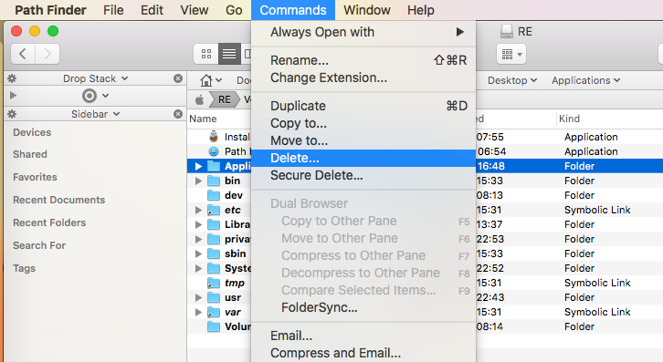

FireWolf OS X PE 9 Manual
Preface
Chapter 1 Introduction
Chapter 2 Preparation
Restore the disk image
Boot FireWolf OS X PE
Chapter 3 Start to use
First View
Toolbar
Main Panel
Rocket Launcher
Applications Management
Importing Applications (Basic)
Importing Applications (Advanced)
Exporting Applications and Others
Chapter 4 System Maintenance
Chapter 5
Mount ESP Partitions
Delete Files in Path Finder
Show Invisible Files
Downloads
Thankyou
Published with GitBook
Delete Files in Path Finder
Delete Files in Path Finder
Select the files or folders you want to delete and click the
Command >> Delete
menu.

results matching "
"
No results matching "
"